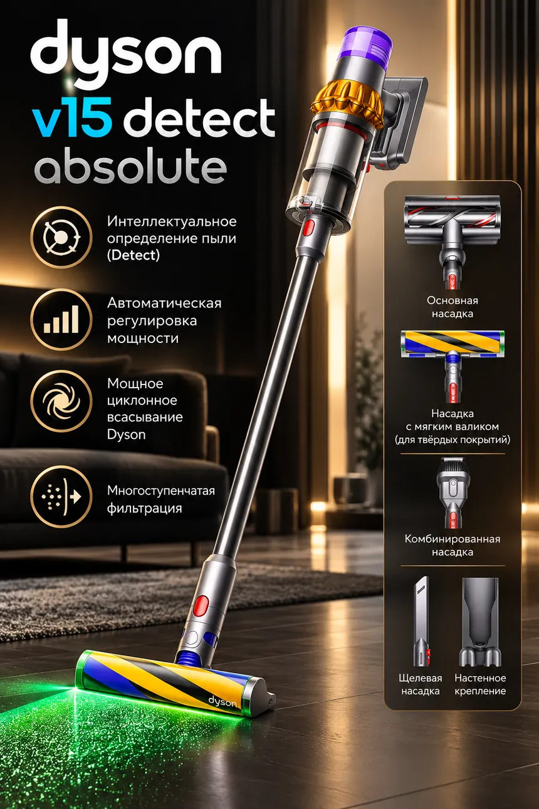

Dyson · Пылесосы
Беспроводной пылесос Dyson V15 Detect Absolute
59 000 ₽
Рассрочка от 6 850 ₽/мес · 3–12 месяцев
Характеристики
- всасывание до 240 AW
- до 60 минут работы
- контейнер 0,77 л
- 14 циклонов
- датчик частиц пыли
- подсветка пыли на твёрдых полах
- LCD-дисплей
- съёмный аккумулятор
- настенное крепление
Доставка и гарантия
Доставка по Грозному от 350 ₽. По Чечне и в другие регионы — по тарифам. Все тарифы
Гарантия магазина 14 дней. На оригинальную технику мировых брендов — гарантия сервиса 1 год.
Самовывоз: г. Грозный, ул. Назарбаева 98.
Оптом
Нужно несколько штук? Уточните оптовую цену в WhatsApp.